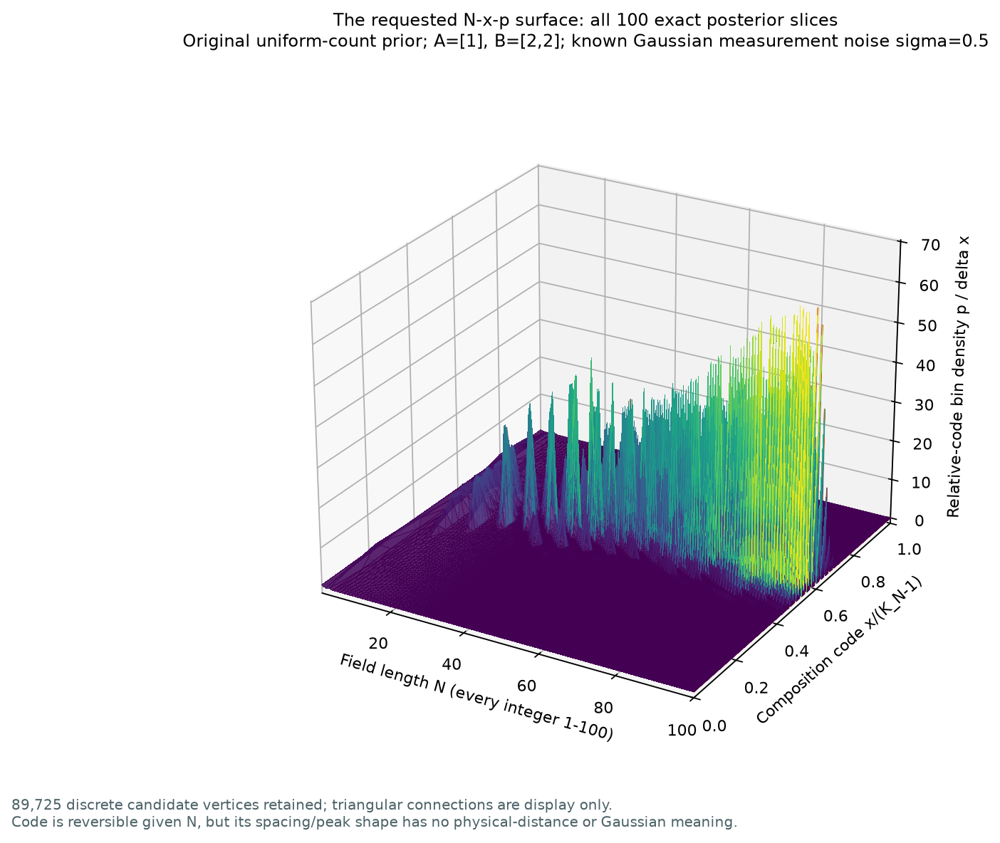
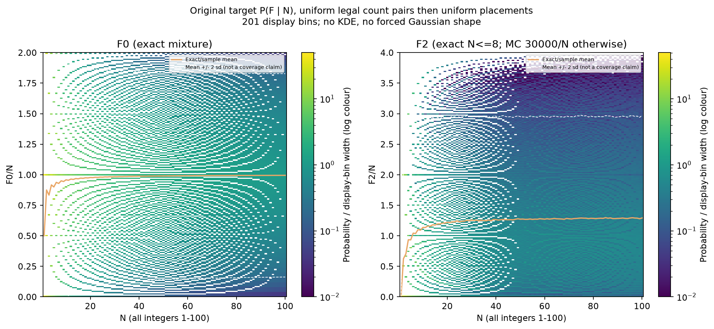
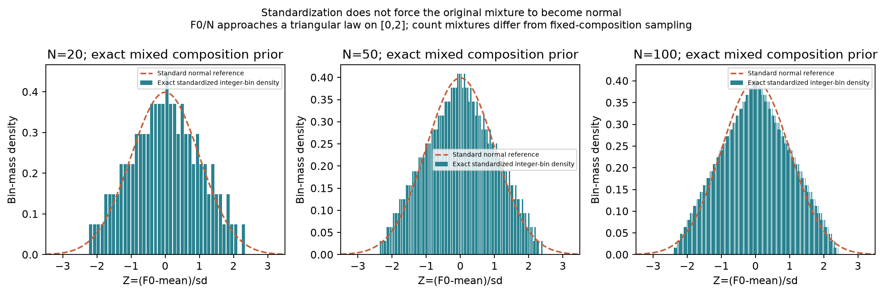

静态图片
可以单独打开图片地址，或下载后放入汇报材料。交互页面保留完整参数切换。
组成后验三维图
全部整数 N=1～100；A=[1]、B=[2,2]，σ=0.5。横向为归一化组成编号，高度是区间密度，不是百分比。

原始特征的边际分布
均匀组成先验下的 F0/N 与 F2/N；F0 精确计算，F2 在 N≤8 精确，其余每个 N 抽样 30,000 次。

与正态分布的比较
F0 的离散标准化分布与正态参考。标准化不会自动令分布成为正态。
